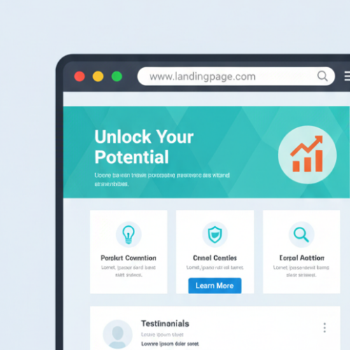

判断が止まる市場を、
先に見る。
市場の中で、人がどこで迷い、どこで判断を止めているかを調査。
施策を増やす前に「考えなくていいこと」を確定させる意思決定専用PDFレポート。
分析設計はAIハイブリッド／用途：検討・会議・意思決定の材料
レポートの使い方を問い合わせる施策を増やす前に、“判断が止まる原因”を整理したい方へ。
-
提案・営業企画で「迷いの論点」を先に潰したい方
顧客がどこで迷うのかを把握し、説明すべき点・省ける点を整理できます。
-

LP・コンテンツの方向性が決めきれない方
施策を増やす前に、「今は優先しないこと」を決める材料になります。
-

新規事業の“打ち手”より先に、迷いの構造を掴みたい方
競合比較よりも、「悩みが生まれる構造」からアイデアの筋道を作れます。
なぜ「お悩みの分析」から始めるのか
ビジネスのヒントは、悩みにしかありません。
ある経営者は、顧客から届くクレームメールを毎日読むことを習慣にしていると語っています。
次の一手は、そこにしかないと知っているからです。
多くの施策がうまくいかないのは、努力が足りないからではありません。
「やること」から先に決めてしまい、本当の悩みを整理しないまま進んでしまうからです。
しかもその悩みは、不満や要望としてはっきり言葉になる前の、違和感として存在していることがほとんどです。
だからこそ私たちは、ユーザーが実際に検索している言葉から、悩みを構造として捉えることを大切にしています。
表に出る前の迷いを見なければ、判断はいつまでも前に進まないからです。
これは「売れる市場」を調べる調査ではありません
ONAYAMIv3は、市場規模・成長率・勝ちパターンを示す一般的な市場調査ではありません。
見ているのは、情報が溢れる市場の中で、人がどこで迷い、どこで判断を止めているかという
「意思決定が止まる構造」です。
施策を増やすためではなく、考えなくていいこと／後回しにしていい判断を確定させるために使います。
ONAYAMIv3で明確になること
迷いが発生する論点の分布
実際の検索行動から、ユーザーが迷いやすい論点や不安の偏りを整理します。
議論しても前に進まないテーマの可視化
“検討しているつもり”で時間が溶ける論点を特定し、「今は触らない」判断を可能にします。
会議でそのまま使える意思決定資料
施策案ではなく、判断の材料（論点・誤解・構造）をまとめたPDFとして提供します。
このレポートで提供しないこと
-
施策の一覧やテンプレート
やることを増やす資料ではありません。
先に「考えなくていいこと」を確定させるためのレポートです。 -
「これをやれば売れます」という答え
出ません。
判断できる状態に戻すための材料を提供します。
ご活用イメージ
施策を増やす前に、論点が整理できた
「迷いの原因が“情報不足”ではなく“論点過多”だと分かり、会議が前に進みました。」
（Web制作・ディレクション）
説明すべき点／省ける点が見えた
「顧客がどこで不安になるかが整理され、提案資料の構成が作りやすくなりました。」
（営業企画・提案）
レポートの使い方を無料でご案内
「何が書いてあって、どう使うレポートなのか」を1分で理解できる資料です。
※分析結果の項目（目次）と使いどころが分かるサンプルをお送りします。
サンプルで分かること
- レポートの目次（構成）
- 各ページで何を判断できるか
- 会議・検討での使い方例
料金について
ご要望に応じて個別にお見積もりいたします。
分析対象（業界／テーマ）と目的（会議整理／LP判断／新規企画など）をお聞かせください。
標準
1業界レポート
5,5000円(税込）〜
形式：PDF（目安20〜30P）
用途：検討・会議・意思決定の材料
おすすめ
カスタマイズ（論点設計あり）
要相談
意思決定用途に合わせて調査設計
「考えなくていいこと」を先に確定
※ 価格は調査範囲・データ量・論点設計の有無により変動します。
よくあるご質問
どのようなデータを使っていますか？
公開されている検索関連データ等を中心に、独自の観点で整理・分類して構造化します。
納品物は何ですか？
意思決定に使えるPDFレポートです（目安：20〜30ページ前後）。目的に応じて構成は調整します。
納期はどのくらいですか？
ご依頼内容により変動しますが、標準で約2週間が目安です。お急ぎの場合もご相談ください。
具体的な施策提案（広告運用・SNS運用など）も出ますか？
施策の“答え”を出すサービスではありません。判断が止まる構造を整理し、次の検討が進む状態を作るための資料です。
ニッチな業界でも分析可能ですか？
可能です。ただし検索データが極端に少ない場合、示せる内容に限りが出る可能性があります。まずはご相談ください。
意思決定を前に進めたい方へ
判断が止まっている状況を、そのまま教えてください。
ONAYAMIv3は、「何をやるか」より先に
「何を考えなくていいか」を整理するためのレポートです。
「目次＋使い方」資料で分かる事
- レポートの目次（構成）
- 各ページで何を判断できるか
- 会議・検討での使い方例
作成者について
ゆこ
Webディレクターとして、Web制作・集客・改善施策の設計に携わる中で、 「打ち出した施策に根拠を出せない」「大きくは間違っていないだろうが、自信が持てない」 という状態を経験してきました。そこで自身でONAYAMIｖ3を開発して使うようになりました。
単一ではなく、複数の部署・立場（制作／営業／運用／企画）をまたぎながら、 判断が必要な時代に、本質的な判断材料を整理し、議論を前に進める役割を果たせればと考えます。
ONAYAMIv3では、検索データの収集・分類・傾向抽出にAI技術を活用しつつ、 実務で培った視点をもとに、 「考えなくていいこと」「今は決めなくていい判断」を明確にするための 分析・構造化・解釈を行っています。